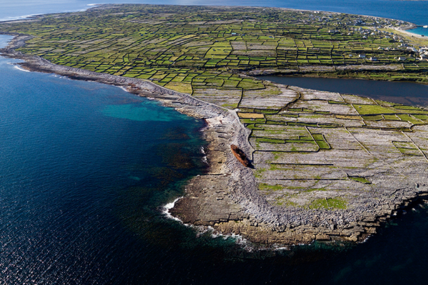

Tourist Destinations
Cliffs of Moher
"The Cliffs of Moher are Ireland’s most visited natural attraction with a magical vista that captures the hearts of up to one million visitors every year.Standing 214m (702 feet) at their highest point they stretch for 8 kilometres (5 miles) along the Atlantic coast of County Clare in the west of Ireland" {Web site link}
Aran Islands
"The Aran Islands are located just off Galway and Doolin. A true Irish experience awaits, locals speak Irish as well as English in a setting of Celtic churches of historical significance including World Heritage site Dun Aonghasa which is set on dramatic 300 ft cliff edge. The Aran Islands are a great choice for special holiday" {Web site link}
The Wild Atlantic Way
"The journey of a lifetime awaits along 2,500km of coastal road on the Wild Atlantic Way. Read on to discover all the ways you can immerse yourself in this unforgettable part of the world." {Web site link}
The Burren
"The Burren, in North County Clare and parts of South County Galway covering an area of 160 square km, is unique - it is like no other place in Ireland." {Web site link}
Tourism Agencies
http://www.discoverireland.ie/ http://www.galwaytourism.ie/Sights and Sounds of Ireland